Macros recipes/it
Questa pagina lista macro che possono aggiungere delle funzionalità alla propria installazione di FreeCAD.
Se avete scritto una macro e volete includerla in una delle categorie su questa pagina, allora consultate Documentazione delle macro per saperne di più su come documentarla correttamente.
Macros
 Operazioni di visualizzazione 3D
Operazioni di visualizzazione 3D
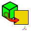
Macro Align Face Object to View: Questa macro allinea la vista corrente a una faccia selezionata.
- Macro Align View to Face: Questa macro allinea la vista corrente a una faccia selezionata.
- Macro Copy3DViewToClipboard: Copia negli appunti il contenuto di 3DView ridimensionato a 640, 480 px.
- Macro FCCamera: Questa macro può ruotare lo schermo di un angolo definito e rispetto ad un asse definito in modo da creare un piano su cui affacciare lo schermo e creare una forma nel piano specificato posizionando la faccia selezionata di fronte allo schermo, e rilevare la posizione della telecamera.
- Macro Mouse Cross: Questa piccola macro trasforma la freccia del mouse in una croce di precisione.
- Macro Rotate View: Questa macro ruota la vista corrente di 90° a sinistra. Funziona solo se si è nella visualizzazione
 XY (in alto).
XY (in alto).
- Macro Rotate View Free: Questa macro viene utilizzata nella console Python e ruota la vista corrente nell'angolo e nel piano indicati.
- Macro Rotate ViewAxonometric: Questa macro ruota la vista corrente in Vista Assonometrica.
- Macro Screen Wiki: Questa macro consente di salvare la Vista 3D nel formato desiderato. La Vista 3D o la finestra 3D completa di FreeCAD assume le dimensioni desiderate.
- Macro Snip: Pubblica facilmente screenshot sul forum di FreeCAD.
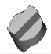
Macro View Rotation: fornisce un'interfaccia utente grafica per consentire la rotazione della vista in base a quantità precise in tutte e tre le direzioni.
- Macro Zoom 1:1: Zoom 1:1: gli oggetti appaiono sullo schermo nelle loro dimensioni reali.
 Animazioni
Animazioni
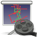
Macro Animated Constrain: Anima il vincolo angolare in Sketcher.
- Macro Animator: anima il modello variandone le proprietà con questo oggetto Python.
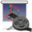
Macro Assemblage Imprimante 3D: Simulazione dei movimenti di una stampante 3D.
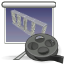
Macro Assembly: anima Assembly.
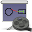
Macro Constraint Draft: Semplice esempio di animazione. Disegna le polilinee utilizzando le espressioni per associare più polilinee e simulare o verificare il movimento. Qui la rotazione del cerchio crea il movimento per tutti gli oggetti connessi (questa macro funziona con FreeCAD versione 0.16).
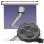
Macro crank simul: Pistone e manovella in rotazione.
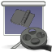
Macro hinge: Apre e chiude una cerniera.
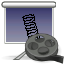
Macro Spring: Simulazione di una molla.
 Ambiente Assembly
Ambiente Assembly
 Macro Move Assembly: Sposta un assieme utilizzando un semplice pannello di controllo.
Macro Move Assembly: Sposta un assieme utilizzando un semplice pannello di controllo.
 Codice e scripting
Codice e scripting
- FreeCAD Manual Converter: script Python che genera automaticamente le versioni PDF ed EPUB del Manuale di FreeCAD.
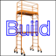
Macro Build Utility: questa macro fornisce un'utilità per assemblare un progetto da file di sottoprogetto utilizzando la funzione Unisci progetto.
- Macro clone explicit: crea una copia di ciascun oggetto selezionato e imposta le sue proprietà su un'espressione collegata all'oggetto originale, rendendolo un clone esplicito e modificabile.
 AsMacro Editor Assistant: estende le capacità dell'editor Python integrato di FreeCAD.
AsMacro Editor Assistant: estende le capacità dell'editor Python integrato di FreeCAD.
- Macro Global Variable Watcher: Questa macro consente all'utente di selezionare variabili globali e di monitorarne i valori.
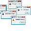
Macro MessageBox: Mostra come fornire informazioni all'utente tramite la GUI.
- Macro Packages: Interfaccia di Pip per l'installazione di pacchetti PyPI nell'ambiente FreeCAD.
- Macro Print SceneGraph: Stampa lo SceneGraph.
- Macro Python Assistant Window: Questa macro fornisce un'area di lavoro per tagliare, copiare e incollare codice Python; è suddivisa in sezioni selezionabili singolarmente e mantiene i dati tra una sessione e l'altra di FreeCAD.
 Macro ZTest Over 128: This macro is only used by programmers Test characters ASCII over 127.
Macro ZTest Over 128: This macro is only used by programmers Test characters ASCII over 127.
- Qt Example: Esempio di utilizzo dei comandi Qt, delle relative connessioni, nonché dell'estrazione e dell'assegnazione dei dati.
- scanObjects: Strumento di ispezione per lo sviluppo di macro e il debug di progetti in FreeCAD.
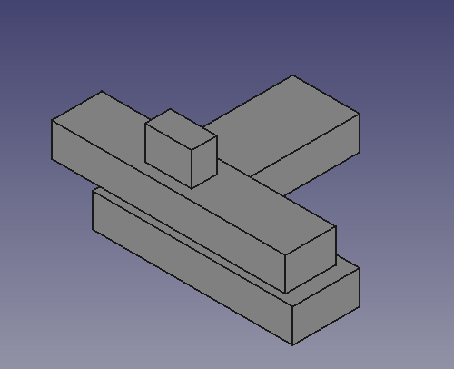
Macro TNP Solution: Un esempio basilare di come risolvere il problema della denominazione topologica (Topological Naming Problem). La macro è destinata esclusivamente ai programmatori.
 Conversione
Conversione
- Macro 3DXML import: Importa un file 3DXML-ASCII in FreeCAD; funzionalità limitate.
- Macro Batch export to mesh: Facilita l'esportazione in blocco di file STL e OBJ. Aggiunge un'interfaccia grafica per velocizzare la conversione e il salvataggio degli oggetti selezionati.
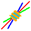
Macro Compound Plus: Prepara un set di comandi in una piccola macro per l'esempio di schizzo 2D: lavora con i file DXF.
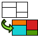
Macro Creating faces from a DXF file: Questa macro crea delle facce a partire da un file DXF; i layer vengono riconosciuti separatamente e organizzati in gruppi.
- Macro DeepCopy: Crea un composto a partire da una parte, includendo una copia di tutte le sue forme.
- Macro DXF to Face and Sketch: Questa macro converte gli elementi selezionati, di un file DXF importato, in facce e schizzi.
- Macro Dxf To Shape: Macro-utility per creare un'unica polilinea (wire) a partire da più segmenti; il tipo di polilinea generata può essere scelto tra: MakeWire, B-spline, B-spline curve, B-spline curve + arco, Poligono o curva di Bézier.
- Macro Extract Wires from Mesh: Estrae i contorni (wire) dalle mesh selezionate.
- Macro FaceToSketch: Converte la faccia selezionata in un singolo schizzo privo di vincoli.
- Macro FCBmpImport: Importa immagini BMP in bianco e nero in FreeCAD come schizzo, polilinea o solido, oppure immagini BMP in scala di grigi per litofanie.
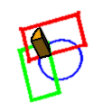
Macro FCWire To Volume: Questa macro esegue un'operazione booleana sugli oggetti selezionati: basta selezionare i profili (wire), impostare lo spessore e cliccare su "Create".
- Macro Iges PyImporter: Importa in FreeCAD un file IGES contenente l'entità 128, ad esempio un file IGES proveniente da FreeShip.
- Macro MeshToPart: Converte le mesh selezionate in parti.
 Macro MultiCopy: MultiCopy consente la duplicazione (copia e incolla) di più oggetti FreeCAD, che possono essere etichettati in modo sequenziale e personalizzato.
Macro MultiCopy: MultiCopy consente la duplicazione (copia e incolla) di più oggetti FreeCAD, che possono essere etichettati in modo sequenziale e personalizzato.
- Macro PartToVRML: Converte le parti selezionate in mesh VRML per ridurre le dimensioni e velocizzare il caricamento (modelli VRML compatibili con KiCad e Blender).
 Ambiente Draft e 2D
Ambiente Draft e 2D
- Macro Align Camera to Working Plane: Questa macro allinea la telecamera al Piano di lavoro di Draft corrente.
- Macro Align Working Plane to Camera: Questa macro sposta il Piano di lavoro di Draft corrente al centro della vista attuale.
 Macro Draft Circle 3 Points: Crea un cerchio a partire da 3 punti 2D ortogonali selezionati.
Macro Draft Circle 3 Points: Crea un cerchio a partire da 3 punti 2D ortogonali selezionati.
- Macro Draft Circle 3 Points 3D: Crea un cerchio a partire da 3 punti selezionati nello spazio 3D.
- Macro Draft Circle Tangent: Crea tangenti ai cerchi di Draft.
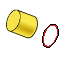
Macro EdgesToArc: Converte gli spigoli selezionati in un arco circolare, se possibile. Utile per ripristinare archi discretizzati.
 Macro Ellipse-Center+2Points: Crea un'ellisse selezionando tre punti (in questo ordine): centro, raggio maggiore e raggio minore.
Macro Ellipse-Center+2Points: Crea un'ellisse selezionando tre punti (in questo ordine): centro, raggio maggiore e raggio minore.
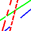
Macro FC Convert Lines: Questa macro converte gli oggetti di tipo linea e wire nei tipi Linea, Tratteggiata, Tratto-punto, Tratto-punto-punto, Zigzag e Mano libera, utilizzando le dimensioni specificate.
- Macro Make Arc 3 Points: Crea un arco a partire da 3 punti selezionati.
- Macro Make Circle 3 Points: Crea un cerchio a partire da 3 punti selezionati; i punti possono essere oggetti.
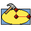
Macro Rectellipse: Crea una rettellisse parametrica.
 Ambiente Fem
Ambiente Fem
- Macro export transient FEM results: Questa macro esporta molteplici oggetti di risultati FEM da un'analisi transitoria nel formato VTK e genera un file PVU utilizzabile per caricare i risultati direttamente in ParaView per la post-elaborazione.
 Gui
Gui
- Macro GuiResetToolbars: Questa macro ripristina la posizione delle barre degli strumenti.
- Macro MacroMenu: Aggiunge le macro presenti nella cartella delle macro al menu Macro di FreeCAD.
 Macro SplitPropEditor: Separa temporaneamente l'editor delle proprietà dalla vista combinata in un dock widget distinto.
Macro SplitPropEditor: Separa temporaneamente l'editor delle proprietà dalla vista combinata in un dock widget distinto.
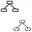
Macro Toggle Panels Visibility: Questa macro alterna la visibilità di vari pannelli di supporto in FreeCAD, consentendo di visualizzare la finestra principale sfruttando tutto lo spazio disponibile sullo schermo.
 Macro MacroToolbarManager: Gestisce facilmente le barre degli strumenti personalizzate per le macro: si possono creare, rinominare ed eliminare le barre, aggiungere e rimuovere le macro, modificare le scorciatoie e le icone, e si ha a disposizione anche un semplice strumento per creare icone in formato XPM.
Macro MacroToolbarManager: Gestisce facilmente le barre degli strumenti personalizzate per le macro: si possono creare, rinominare ed eliminare le barre, aggiungere e rimuovere le macro, modificare le scorciatoie e le icone, e si ha a disposizione anche un semplice strumento per creare icone in formato XPM.
 Informazioni e misure
Informazioni e misure
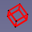
Macro BoundingBox Tracing: Questa macro traccia sei rettangoli in rosso (modificabile) attorno al riquadro di delimitazione (BoundingBox).
- Macro CenterFace: Questa macro traccia in rosso (e in modo modificabile) il centro della faccia (massa) con un punto e ne stampa le coordinate.
- Macro CenterOfMass: Fornisce la massa totale e il centro di massa di più oggetti selezionati, in base alla densità scelta.
- Macro cross section: Visualizza una sezione trasversale scorrevole in modo interattivo.
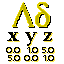
Macro Delta xyz: Fornisce i valori Delta e la distanza tra due punti.
- Macro Dump Objects: Questa macro genera un elenco di tutti gli oggetti nel documento corrente; l'elenco può essere visualizzato in una finestra o nella vista Report.
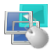
Macro FC element selector: Questa macro visualizza tutti gli elementi sotto il cursore (analogamente alla "Macro Mouse over cb") tramite una GUI (verranno mostrati anche gli elementi coperti da altri).
- Macro FCInfo: Fornisce una serie di informazioni sulla forma selezionata e consente di visualizzare conversioni relative a lunghezza, inclinazione (gradi, radianti, gradi centesimali), superficie, volume e peso (basato sulla densità scelta), utilizzando diverse unità di misura internazionali e anglosassoni.
- Macro FCInfo ToolBar: Fornisce una serie di informazioni sulla forma selezionata sotto forma di FCInfo in una mini barra degli strumenti.
- Macro FCInfoGlass: Fornisce una serie di informazioni sulla forma selezionata, visualizzata nella schermata 3D.
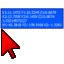
Macro FCInfoToMouse: Fornisce informazioni in tempo reale su coordinate, lunghezza e angoli relativi alla posizione del mouse, visualizzandole in un fumetto informativo sulla finestra 3D.
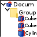
Macro FCTreeView: Macro per elencare tutti gli oggetti del progetto in un unico elenco piatto (senza gerarchia), con opzioni di ordinamento per nome, etichetta, visibilità, gruppo o lunghezza; include funzionalità di ricerca per nome ed etichetta (con o senza distinzione tra maiuscole e minuscole) e consente di selezionare tutti gli oggetti visualizzati nella finestra della macro.
- Macro HighlightCommon: Evidenzia le parti comuni.
- Macro HighlightDifference: Calcola la differenza tra due forme.
- Macro MeasureCircle: Calcola il raggio di un cerchio a partire da 3 punti o da un bordo circolare.
- Macro Mouse over cb: Questa macro visualizza tutti gli elementi sotto il cursore (verranno visualizzati anche gli elementi coperti da altri elementi).
- Macro Normal Vector: Calcola il vettore normale di una faccia preselezionata.
- Macro ObjectInfo: Modulo "Info" di facile utilizzo creato da un utente di FreeCAD.
- Macro SimpleProperties: Visualizza in modo sintetico le proprietà fisiche fondamentali di un oggetto (volume, dimensioni del riquadro di delimitazione, ...).
Librerie
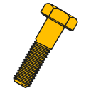
Macro BOLTS: L'obiettivo di BOLTS è creare una libreria di parti standard gratuita e open source per applicazioni CAD.
- Macro PartsLibrary: Avvia il browser della libreria dei componenti.
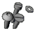
Macro screw maker1_2: Questa macro crea una vite, con o senza filettatura, secondo gli standard ISO (screw_maker1_6.py.zip con supporto a Pyside). (Screw Maker 2.0 - nuova versione!)
 Funzioni matematiche
Funzioni matematiche
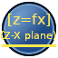
Macro Draw 2D Function: Disegna una funzione descritta da un'equazione z=F(x).
- Macro Draw Parametric 2D Function: Basata sulla macro precedente, ma parametrica e opzionalmente polare.
- Macro Parametric Curve FP: Aggiornamento Python della funzionalità "Macro 3D Parametric Curve".
 Creazione di oggetti
Creazione di oggetti
- Macro AeroFoil: AeroFoil genera curve e superfici di profili alari utilizzando modelli predefiniti, funzioni algebriche e file DAT o CSV.
 Macro Airfoil Import & Scale: Importa e ridimensiona un profilo alare .dat alla lunghezza della corda desiderata.
Macro Airfoil Import & Scale: Importa e ridimensiona un profilo alare .dat alla lunghezza della corda desiderata.
- Macro Apothem Based Prism GUI: Una finestra di dialogo GUI che crea un prisma basato sull'apotema (raggio della circonferenza inscritta) a partire dall'input dell'utente.
- Macro BSurf from grid: Crea una superficie B-spline attraverso una griglia di punti.
- Macro Circle: Crea un cerchio o un arco specificando raggio, diametro, circonferenza, area, angolo iniziale, angolo finale, arco, angolo al centro, corda, freccia o centro (punto) a scelta (come sopra, ma senza interfaccia grafica).
- Macro CirclePlus: Crea un cerchio o un arco specificando raggio, diametro, circonferenza, area, angolo iniziale, angolo finale, arco, centro dell'angolo, corda, freccia o centro (punto) a scelta (stesse opzioni anche tramite interfaccia grafica), oltre a creare settori e facce.
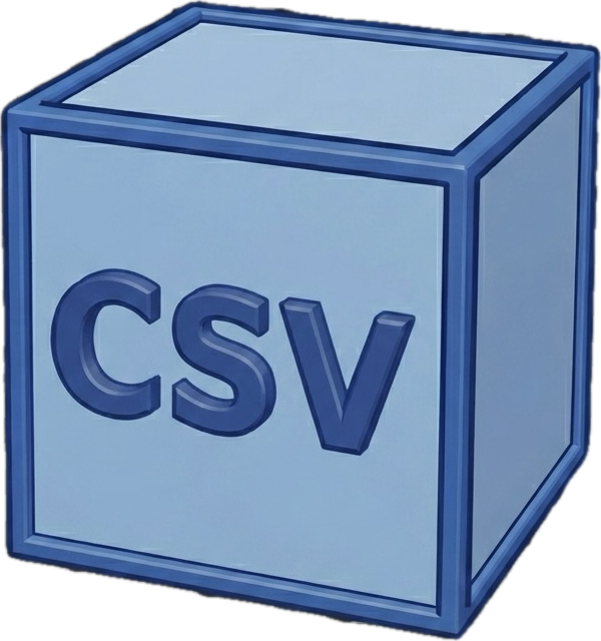
Macro CSV2Objects: Genera grandi quantità di oggetti di testo 3D a partire da file CSV, mappandoli su linee guida di uno schizzo.
 Macro Cut Circle: Taglia un cerchio o un arco e crea x archi, specificando il numero di tagli.
Macro Cut Circle: Taglia un cerchio o un arco e crea x archi, specificando il numero di tagli.
 Macro Cut Line: Taglia una linea e crea x punti, specificando il numero di punti e scegliendo se creare la linea, i punti e/o una colorazione bicolore.
Macro Cut Line: Taglia una linea e crea x punti, specificando il numero di punti e scegliendo se creare la linea, i punti e/o una colorazione bicolore.
- Macro DXF to 3D Converter: Strumento automatizzato per convertire profili DXF in oggetti 3D definendo una lunghezza personalizzata.
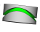
Macro FCCamGroover: Crea un cilindro scanalato per camme.
 Macro FCCircularText: Questa macro crea del testo attorno a un cilindro.
Macro FCCircularText: Questa macro crea del testo attorno a un cilindro.
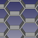
Macro FCHoneycombMaker: Crea una griglia a nido d'ape parametrica.
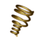
Macro FCSpring Helix Variable: Questa macro creat una molla troncata, la troncatura è adattabile a qualsiasi spira a scelta.
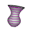
Macro FCSpring On Surface: Questa macro crea una molla (elica) sulla superficie dell'oggetto (solido).
- Macro Geodesic Dome: Questa macro crea un guscio a forma di cupola geodetica.
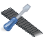
Macro Guitar fretboard: Generatore di tastiere per chitarra.
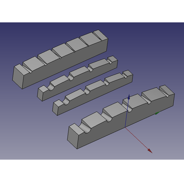
Macro Guitar Nut: Costruttore di capotasti per chitarra.
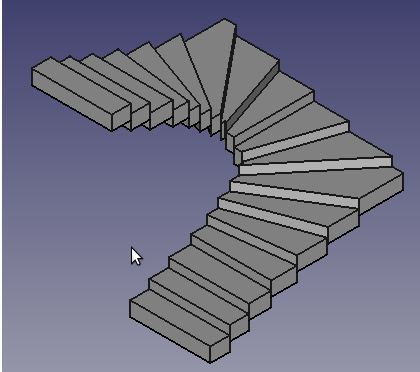
Macro Half turn stairs: Crea una scala con svolta a 180 gradi (sinistra/destra) a partire da un file dati.
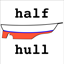
Macro Half-Hull Model: Questa macro genera modelli sia a mezzo scafo che a scafo intero a partire da una serie di disegni lineari bidimensionali.
- Macro HilbertCurve: Crea un wire a forma di curva di Hilbert in 2 o 3 dimensioni con molte iterazioni.
- Macro Honeycomb: Crea un oggetto Python "Honeycomb" (a nido d'ape) compatibile sia all'interno che all'esterno di PartDesign.
- Macro ImportAirfoil: Importa le coordinate del profilo alare, quindi scala, ruota e trasla il profilo (sia nel piano che lungo l'apertura alare), seleziona il piano e l'asse principale e trasforma la geometria in uno schizzo.
 Macro Intersection: Trova l'intersezione tra 2 o 3 spigoli o facce selezionati; funziona anche con piani e linee di riferimento. Crea un oggetto Python di tipo "feature parametrica" contenente la forma dell'intersezione.
Macro Intersection: Trova l'intersezione tra 2 o 3 spigoli o facce selezionati; funziona anche con piani e linee di riferimento. Crea un oggetto Python di tipo "feature parametrica" contenente la forma dell'intersezione.
 Macro Line Length: Crea una linea definita da coordinate XYZ, lunghezza e angolo rispetto al piano XY.
Macro Line Length: Crea una linea definita da coordinate XYZ, lunghezza e angolo rispetto al piano XY.
- Macro Loft: Crea un loft utilizzando una serie di wire (creati appositamente per la Macro Texture).
- Macro Place Image: Crea un Piano immagine e lo allinea a un Rettangolo di Draft esistente.
- Macro Points to Splines: Crea spline a partire da sezioni di un oggetto Points.
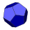
Macro Polyhedrons: Questa macro crea poliedri parametrici (dodecaedro, icosaedro, tetraedro...). Personalizzabili tramite raggio o lato.
- Macro Pyramid: Questa macro crea una piramide parametrica. Tutti i parametri sono personalizzabili, proprio come per Cono di Part.
- Macro Repro Wire: Questa macro crea una copia di un oggetto o sotto-oggetto selezionato.
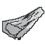
Macro Site From Contours: Crea un sito di Arch a partire da una serie di curve di livello.
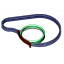
Macro Solid Sweep: Crea un solido estrudendo un profilo 2D lungo una traiettoria precedentemente selezionata nella vista 3D. Gli elementi 2D possono essere creati utilizzando i normali strumenti dell'interfaccia grafica di FreeCAD.
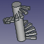
Macro Stairs: Crea l'elica della scala e il profilo del bordo del gradino, selezionare gli elementi ed eseguire la macro.
- Macro TimingGear: Questa macro crea pulegge dentate GT2/GT3/GT5 da utilizzare con cinghie dentate.
 Macro Triangle AH: Questa macro crea un triangolo specificando l'angolo al vertice e l'altezza del triangolo (il vertice è posizionato alle coordinate xyz 0,0).
Macro Triangle AH: Questa macro crea un triangolo specificando l'angolo al vertice e l'altezza del triangolo (il vertice è posizionato alle coordinate xyz 0,0).
 Macro WireXYZ: Questa macro crea un Wire utilizzando le coordinate estratte da un file. Le coordinate X, Y e Z sono separate da uno spazio.
Macro WireXYZ: Questa macro crea un Wire utilizzando le coordinate estratte da un file. Le coordinate X, Y e Z sono separate da uno spazio.
 Trasformazione di oggetti
Trasformazione di oggetti
- Macro Align Object BoundBox Center: Allinea due (o più) oggetti in base al centro dei loro riquadri di delimitazione.
- Macro Align Object to View: Questa macro allinea l'oggetto selezionato alla vista corrente e imposta le coordinate di posizionamento della telecamera.
- Macro ArrayCopy: Copia l'oggetto selezionato più volte, disponendolo in una griglia di tipo matrice.
- Macro Bevel: Applica una smussatura ai vertici selezionati e crea un oggetto Python di tipo "feature parametrica"; è compatibile con tutti i solidi (ad eccezione di quelli con spigoli arrotondati), incluse le feature presenti nei corpi di Part Design.
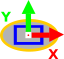
Macro Center Align Objects with Faces or Edges: Questa macro gestisce i seguenti vincoli: vincolo di concentricità tra parti non cilindriche e vincolo su centri di facce e/o spigoli. Funziona inoltre con i nuovi contenitori Body e App::Part, così come con la gerarchia STEP.
- Macro CloneConvert: Crea un clone dell'oggetto e lo converte nella posizione e dimensione scelte (pollici, mm, m, µm...). L'oggetto di base viene riconosciuto in mm (unità di base di FreeCAD).
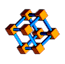
Macro Connect And Sweep: Questa macro crea facilmente un collegamento tra due oggetti, tra un oggetto e un punto, oppure tra due punti; è inoltre possibile selezionare una linea, un filo o uno spigolo (i centri degli oggetti fungono da punti iniziale e finale dell'estrusione lungo un percorso) oppure scegliere tra forme configurabili quali ellisse, poligono o cerchio.
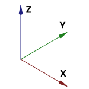
Macro Express Placement: Visualizza e modifica rapidamente le coordinate di posizionamento di un oggetto selezionato, direttamente o tramite espressioni.
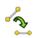
Macro FlattenWire: Appiattisce i wire di Draft non planari portandoli alla loro coordinata Z mediana.
- Macro FlattenWire3Points: Appiattisce i wires di Draft che non giacciono su un piano definito da 3 punti.
- Macro HealArcs: A volte gli archi vengono trasformati in B-Spline, ad esempio in seguito ad operazioni di ridimensionamento. Questa macro li riconverte in archi validi. È utile prima dell'esportazione in formato DXF.
- Macro JointWire: Consente di individuare e unire tutti i bordi non connessi a quello più vicino non connesso, utilizzando una linea.
- Macro magicAngle: Una semplice interfaccia grafica per la funzione Draft.rotate. Consente di ruotare pannelli e persino oggetti più complessi, come i profili strutturali.
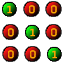
Macro MatrixTransform: Applica trasformazioni lineari dello spazio per deformare le forme. Ad esempio: ridimensionamento non uniforme, inclinazione (shearing), riflessione, scambio degli assi.
 Macro MeshResetOrigin: Macro che consolida le trasformazioni delle mesh reimpostando l'origine di ciascuna mesh selezionata sull'origine del documento (o del mondo).
Macro MeshResetOrigin: Macro che consolida le trasformazioni delle mesh reimpostando l'origine di ciascuna mesh selezionata sull'origine del documento (o del mondo).
 Macro Move to Origin: Questa macro trasla il posizionamento di un oggetto in modo che una posizione selezionata ne diventi la nuova origine.
Macro Move to Origin: Questa macro trasla il posizionamento di un oggetto in modo che una posizione selezionata ne diventi la nuova origine.
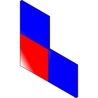
Macro MultiCuts: Questa macro migliora la gerarchia dei tagli booleani tramite l'etichettatura automatica e l'uso di copie per i tagli.
- Macro Overlap: Operazione booleana. Simile a Part Common, ma con una soglia personalizzabile per il conteggio delle sovrapposizioni (parametrica).
- Macro Parametric Defeaturing: Macro che fornisce funzionalità parametriche di defeaturing all'interno e all'esterno dell'Ambiente PartDesign.
- Macro Perpendicular To Wire: Questa macro posiziona un oggetto perpendicolarmente a un wire selezionato.
- Macro PlacementAbsolufy: Ripristina i contenitori delle parti all'origine globale mantenendo la posizione assoluta degli oggetti.
- Macro Remove parametric history: Rimuove tutta l'associatività parametrica da un oggetto, lasciandolo come forma "statica" (priva di parametri).
 Macro Rotate To Point: Macro per ruotare un oggetto attorno al centro del suo riquadro di delimitazione (bounding box), al suo centro di massa o all'ultimo punto cliccato.
Macro Rotate To Point: Macro per ruotare un oggetto attorno al centro del suo riquadro di delimitazione (bounding box), al suo centro di massa o all'ultimo punto cliccato.
- Macro Section: Implementazione alternativa dello strumento "Part Section", più adatta alla creazione di percorsi di sweep (parametrici).
- Macro StraightenObject: Allinea gli oggetti al sistema di coordinate di FreeCAD in base a una faccia o uno spigolo di riferimento.
- Macro SuperWire: Forza la creazione di un Wire a partire da linee e archi che non si toccano necessariamente. Utilizzare questa opzione se la normale operazione di creazione del Wire non riesce.
- Macro WireFilter: Filtra i wire di uno schizzo per utilizzarne solo alcuni; consente inoltre di applicare offset 2D, ridimensionare e riordinare la sequenza dei wire.
Visibilità degli oggetti, proprietà della vista e texture
- colorManager: Consente di impostare i colori delle facce per tutti gli oggetti a partire da un foglio di calcolo. È inoltre possibile esplorare i colori per una faccia o un oggetto selezionato manualmente e visualizzarne l'effetto sul modello 3D in tempo reale.
 Macro Colorize: Imposta facilmente i colori di facce, spigoli e vertici, inclusi i singoli livelli di trasparenza.
Macro Colorize: Imposta facilmente i colori di facce, spigoli e vertici, inclusi i singoli livelli di trasparenza.
- Macro EasyReflector: Texture facilmente gestibili tramite un oggetto Python con funzionalità parametriche, che persiste tra le sessioni di FreeCAD e del documento.
- Macro Hidden Alls objects: Questa macro nasconde tutti gli oggetti nel documento (Visibility=False).
- Macro Texture: Crea un progetto a partire da un'immagine BMP per generare facilmente una texture.
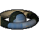
Macro Texture Objects: Questa macro consente di applicare temporaneamente un'immagine di texture agli oggetti selezionati.
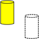
Macro Toggle Drawstyle: Questa macro alterna lo stile di visualizzazione dell'oggetto selezionato.
- Macro Toggle Drawstyle Optimized: Questa macro alterna lo stile di visualizzazione dell'oggetto selezionato (analoga alla macro "Toggle Drawstyle" precedente, ma ottimizzata per tutte le lingue).
 Macro Toggle Visibility: Set di tre macro: macro 1: nasconde gli oggetti non selezionati; macro 2: visualizza tutti gli oggetti; macro 3: nasconde tutti gli oggetti.
Macro Toggle Visibility: Set di tre macro: macro 1: nasconde gli oggetti non selezionati; macro 2: visualizza tutti gli oggetti; macro 3: nasconde tutti gli oggetti.
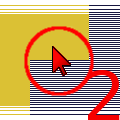
Macro Toggle Visibility2 1-2: Set di due macro: la macro 1:Macro_Toggle_Visibility2_1-2 nasconde gli oggetti non selezionati, mentre la macro 2:Macro_Toggle_Visibility2_2-2 visualizza tutti gli oggetti, ripristinando la visibilità originale.
- Macro Toggle Visibility2 2-2: Set di due macro: la macro 1:Macro_Toggle_Visibility2_1-2 nasconde gli oggetti non selezionati, mentre la macro 2:Macro_Toggle_Visibility2_2-2 visualizza tutti gli oggetti, ripristinando la visibilità originale.
- Macro Visible Alls objects: Questa macro verifica la visibilità di tutti gli oggetti nel documento (Visibility=True).
- Macro Visibility Manager: Gestisce la visibilità degli oggetti del documento per tipo o singolarmente.
- setTextures: Consente di memorizzare in modo permanente l'URL delle texture in un progetto FreeCAD e di caricare le texture memorizzate.
 Ambiente PartDesign
Ambiente PartDesign
- Macro PDWrapper: Incapsula solidi non appartenenti a PartDesign per l'utilizzo nei corpi PartDesign, e altro ancora.
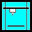
Stampa 3D
 Macro 3d Printer Slicer: Esporta il progetto corrente verso un software di slicing o un software CAM.
Macro 3d Printer Slicer: Esporta il progetto corrente verso un software di slicing o un software CAM.
 Macro 3d Printer Slicer Individual Parts: Una volta eseguito, questo codice esporta i corpi visibili al livello principale del progetto attualmente aperto (ignorando quelli situati a livelli inferiori della struttura ad albero) in singoli file STL e li apre nel software di slicing in uso. La macro è configurata per utilizzare Cura come programma predefinito, ma è possibile impostare un altro slicer modificando la variabile SLICERAPP nel codice sorgente.
Macro 3d Printer Slicer Individual Parts: Una volta eseguito, questo codice esporta i corpi visibili al livello principale del progetto attualmente aperto (ignorando quelli situati a livelli inferiori della struttura ad albero) in singoli file STL e li apre nel software di slicing in uso. La macro è configurata per utilizzare Cura come programma predefinito, ma è possibile impostare un altro slicer modificando la variabile SLICERAPP nel codice sorgente.
 Macro 3D Printer 3mf Workflow: Macro per l'esportazione di file 3MF con superfici lisce, mantenendo tutte le impostazioni di stampa dello slicer e con un flusso di lavoro automatizzato verso lo slicer preferito.
Macro 3D Printer 3mf Workflow: Macro per l'esportazione di file 3MF con superfici lisce, mantenendo tutte le impostazioni di stampa dello slicer e con un flusso di lavoro automatizzato verso lo slicer preferito.
 Macro 3D Printer Workflow: Macro che crea un file STL con arrotondamenti perfetti (ovvero privi di sfaccettature visibili) a partire dagli oggetti selezionati. Consente inoltre di avviare programmi a scelta, ad esempio per automatizzare il flusso di lavoro FreeCAD → Slicer → printing workflow.
Macro 3D Printer Workflow: Macro che crea un file STL con arrotondamenti perfetti (ovvero privi di sfaccettature visibili) a partire dagli oggetti selezionati. Consente inoltre di avviare programmi a scelta, ad esempio per automatizzare il flusso di lavoro FreeCAD → Slicer → printing workflow.
Raytracing
- Macro Z Height Map: Crea una heightmap in scala di grigi lungo l'asse Z.
Ambiente Spreadsheet
 Macro Alias For Table For Object: Automatically creates aliases in a two-dimensional table using the names of the rows and columns. A second function can create a link between a cell and a property value of an object. Just place the name of the relevant object in the column and the name of the property in the row.
Macro Alias For Table For Object: Automatically creates aliases in a two-dimensional table using the names of the rows and columns. A second function can create a link between a cell and a property value of an object. Just place the name of the relevant object in the column and the name of the property in the row.
- Macro ConstraintToAlias: Allows to create a spreadsheet or add an alias to an existing spreadsheet from within the open sketch editor.
- Macro EasyAlias: Quickly create aliases in FreeCAD Spreadsheet workbench. It uses the labels from one column to create aliases for adjacent cells in the next column to the right, e.g. labels from Column A become aliases for the cells in Column B.
- Macro FCSpreadSheet Extract: This macro save the data in a csv file with the formula or in a xml file.
- Macro FindAliasReferences: Find all the expressions in open documents that contain the alias, or if the alias is not defined, then the value in the spreadsheet's selected cell(s).
- Macro Sketch Constraint From Spreadsheet: Quickly add a fully dynamic length constraint to a sketch element using a spreadsheet cell alias or address, or link spreadsheet values to object properties. The macro can also create aliases automatically.
 Macro Spreadsheet Dependency Inspector: Displays, for a selection of spreadsheet cells, all dependencies between spreadsheet cells and even between cells and object properties.
Macro Spreadsheet Dependency Inspector: Displays, for a selection of spreadsheet cells, all dependencies between spreadsheet cells and even between cells and object properties.
- Macro Spreadsheet Tools: This macro helps managing cells inside FreeCAD Spreadsheet workbench.
- Macro Spreadsheet2html: Exports a spreadsheet as styled html. Intended as support in transfering data to office suits.
- sheet2export: Allows to export FreeCAD spreadsheet to file formats (.md, .html, .csv, .json).
 Utilità
Utilità

- Macro Arch Axis System Repartition: This macro help you to create an Arch Axis System along a line with a set of parameters.
- Macro Convert 021: Converts a FreeCAD file saved with a post-0.21 version back to 0.21 format.
- Macro Download Classifications: Downloads a package of BIM classification systems (Masterformat, Uniformat, ...) to be used in BIM projects in FreeCAD.
- Macro Duplicate Selection: This macro testing if one selection are duplicate, select the object IN THE 3D VIEW the "ForbiddenCursor" stay if the or one selection is duplicate, the macro stay resident.
- Macro Easy cutouts for Enclosure Design: This macro makes Cutouts for Enclosures in a very handy way.
- Macro ExpandTreeItem: This macro expand selected items in the tree view. If not selection all item are expand/collapse.
- Macro findConfigFiles: Finds user config files system.cfg and user.cfg, copies folder location to system clipboard, instructs user on renaming these files in order to reset FreeCAD settings, and opens folder with default file browser.
- Macro ForceRecompute: Forces manual recompute of model.
- Macro If Selected Stay If Not Then Delete: All object not selected are deleted!
- Macro ImperialScales: Shows a list of US Imperial Arch scales list with the corresponding factor to apply to TechDraw pages or views.
- Macro merge duplicate materials: Merges materials that have the same base name (with different numeral endings like 001, 002,...) into one.
- Macro PCBWay: Sends a selected object to PCBWay for manufacturing through CNC milling, laser cutting or 3D printing.
- Macro Recompute Profiler: Measures time it takes to recompute each object in a project.
- Macro Wiki Object Properties List Generator: Generates lists of object properties for use in the FreeCAD Wiki documentation.
- Macro Wiki Object Properties List Generator Basic Version: Generates lists of object properties for use in the FreeCAD Wiki documentation.
- Macro Replace Part in Assembly: Replaces a part (simple copy) in an "Assembly" with another Part (simple copy).
- Macro Select Hovering: This macro select a choice Face, Edge, Vertex hovering by the mouse.
- Macro SelectVisible: All visible objects in the tree will be selected.
- Macro Server: Allows to remotely set spreadsheet values (even in bulk and recompute when done) and automate exports.
- Macro Shake Sketch: Shake a sketch in order to discover its unconstrained parts.
 Macro SketchUnmap: Unmap a sketch from its current support and makes its placement absolute, eventually creating a locating datum plane.
Macro SketchUnmap: Unmap a sketch from its current support and makes its placement absolute, eventually creating a locating datum plane.
- Macro TreeToAscii: Prints model tree as "ASCII art" with custom pattern & style, and export to clipboard, file or embedded document.
- Macro Unbind Numpad Shortcuts: Rebinds standard view commands from digit keys to Ctrl+digit, so that they don't spin the view by accident when entering numbers.
 Macro WorkFeatures: Tool utility to create points, axes, planes and many other useful features to facilitate the creation of your project.
Macro WorkFeatures: Tool utility to create points, axes, planes and many other useful features to facilitate the creation of your project.
 Wizards
Wizards

{kind=link}
{kind=link}
{kind=link}
{kind=link}
{kind=link}
{kind=link}
{kind=link}
{kind=link}
{kind=link}
{kind=link}
{kind=link}
{kind=link}
{kind=link}
{kind=link}
{kind=link}
{kind=link}
{kind=link}
{kind=link}
{kind=link}
{kind=link}
{kind=link}
{kind=link}
{kind=link}
{kind=link}
{kind=link}
{kind=link}
{kind=link}
{kind=link}
{kind=link}
{kind=link}
{kind=link}
{kind=link}
{kind=link}
{kind=link}
{kind=link}
{kind=link}
{kind=link}
{kind=link}
{kind=link}
{kind=link}
{kind=link}
{kind=link}
{kind=link}
{kind=link}
{kind=link}
{kind=link}
{kind=link}
{kind=link}
{kind=link}
{kind=link}
{kind=link}
{kind=link}
{kind=link}
{kind=link}
{kind=link}
{kind=link}
{kind=link}
{kind=link}
{kind=link}
{kind=link}
{kind=link}
{kind=link}
{kind=link}
{kind=link}
{kind=link}
{kind=link}
{kind=link}
{kind=link}
{kind=link}
{kind=link}
{kind=link}
{kind=link}
{kind=link}
{kind=link}
{kind=link}
{kind=link}
{kind=link}
{kind=link}
{kind=link}
{kind=link}
{kind=link}
{kind=link}
{kind=link}
{kind=link}
{kind=link}
{kind=link}
{kind=link}
{kind=link}
{kind=link}
{kind=link}
{kind=link}
{kind=link}
{kind=link}
{kind=link}
{kind=link}
{kind=link}
{kind=link}
{kind=link}
{kind=link}
{kind=link}
{kind=link}
{kind=link}
{kind=link}
{kind=link}
{kind=link}
{kind=link}
{kind=link}
{kind=link}
{kind=link}
{kind=link}
{kind=link}
{kind=link}
{kind=link}
{kind=link}
{kind=link}
{kind=link}
{kind=link}
{kind=link}
{kind=link}
{kind=link}
{kind=link}
{kind=link}
{kind=link}
{kind=link}
{kind=link}
{kind=link}
{kind=link}
{kind=link}
{kind=link}
{kind=link}
{kind=link}
{kind=link}
{kind=link}
{kind=link}
{kind=link}
{kind=link}
{kind=link}
{kind=link}
{kind=link}
{kind=link}
{kind=link}
{kind=link}
{kind=link}
{kind=link}
{kind=link}
{kind=link}
{kind=link}
{kind=link}
{kind=link}
{kind=link}
{kind=link}
{kind=link}
{kind=link}
{kind=link}
{kind=link}
{kind=link}
{kind=link}
- Macro FCGear: Additional Workbench to create different types of gears, involute gear, involute rack, cycloide gear, bevel gear.
{kind=link}
- Macro Fonts Win10 PYMP: This little macro is dedicate to users of Windows 10. The explorer fonts for use the ShapeString is empty and this little macro can help you see easily the font to use.
{kind=link}
- Macro GenerateDrawing: Macro for automatic drawing generation with 3 normal projections and one isometric.
{kind=link}
- Macro GenerateViews: Macro for automatic 2D views generation with 6 normal projections and one isometric.
{kind=link}
- Macro Geneva Wheel: Allows the user to create a Geneva wheel mechanism from scratch. Must edit values within the Macro to alter the size of the object.
{kind=link}
- Macro Geneva Wheel GUI: A GUI front end that allows the user to create a Geneva wheel mechanism from scratch.
- Macro Heat Flow Convection Conduction: Calculates the heat flow rate in one direction due to convection and (or) conduction (when the phenomenon does not change with time). It also calculates the temperatures between the layers of the materials (e.g. in case of a double-glazed window or an insulated wall etc.).
- Macro Megaminx: Display a Megaminx and interactively do slice rotations.
{kind=link}
 Macro PropertyMemo: This macro creates an additional Property (memo or other text) for your object (works only with Draft objects).
Macro PropertyMemo: This macro creates an additional Property (memo or other text) for your object (works only with Draft objects).
- Macro Rubik Cube: Display a Rubik Cube and interactively do slice rotations.
{kind=link}
- Macro Sheet Metal Unfolder: Creates an unfolded part from a sheet-metal-part.
{kind=link}
- Macro Unfold Box: Allows to unfold the surfaces of a box of any shape and to draw them on a page.
{kind=link}
- Macro Unroll Ruled Surface: Allows to unroll ruled surfaces and to draw them on a page.
{kind=link}
- Macro Code Colors Resistance: Create the resistance, give the value or the color code, you can also calculate the total value with a serial or parallel resistance.
{kind=link}
 Woodworking
Woodworking
- getDimensions: FreeCAD macro to get chipboards dimensions to cut (BOM, cutlist).
- Macro Cabinets32: Creates side and top/bottom walls for a cabinet with drilled holes for connection parts of manufacturer Hettich.
{kind=link}
- Macro Joint: Creates a variety of joints, such as mortise/tenon, box joints, dovetail joints, and snap joints.
{kind=link}
- makeTransparent: Switches all parts from non-transparent to transparent, and back, allowing you to preview pilot holes, countersinks and other joints.
Come utilizzare le macro
Vedere la pagina Come installare le macro per una descrizione completa, e Come personalizzare la barra degli strumenti per aggiungere la macro a una barra degli strumenti per un accesso veloce.
L'installazione di molte macro equivale all'installazione di un nuovo workbenchambiente; vedere la pagina Come installare ambienti aggiuntivi per queste informazioni.
Installazione automatica
Installazione automatica
A partire da FreeCAD 0.17, utilizzare Addon Manager in Strumenti → Addon manager per installare una macro che è stata inclusa nel repository FreeCAD-macros.
Installazione manuale
Installazione manuale
Se non si utilizza Addon Manager, la macro può essere installata manualmente.
- Copiare il codice Python dalla pagina della macro corrispondente.
- Aprire il menu macro Macro → Macros, premere Crea, e dargli un nome.
- Incollare il codice Python che è stato copiato.
- Premere il pulsante Salva, e riavviare FreeCAD.
- Per usarla, aprire nuovamente il menu macro, selezionare la nuova macro e premere Esegui.
Aggiungere una macro a una barra degli strumenti personalizzata
- Andare in Strumenti → Personalizza.
- Nella scheda Macro, aggiungere un nuovo nome di macro e, facoltativamente, definire un'icona e una scorciatoia da tastiera.
- Nella scheda Barra degli strumenti, creare una nuova barra degli strumenti e aggiungere la macro, prendendola dalla categoria Macros.